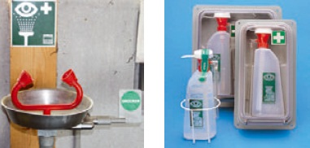

Nach Augenkontakt:

Nach Hautkontakt:
Nach Verschlucken:
Bei Bewusstlosigkeit:
Der Arzt muss über Art und Wirkung des schädigenden Arbeitsstoffes informiert werden. Dazu Sicherheitsdatenblätter und Betriebsanweisungen mitgeben.
Nach Umfüllen müssen die Behälter wie das Originalgebinde gekennzeichnet werden. Auf keinen Fall dürfen sie in Behälter abgefüllt werden, in denen üblicherweise Getränke oder Lebensmittel aufbewahrt werden.
Container mit Holzschutzmittelkonzentraten müssen so gelagert werden, dass sie nicht beschädigt werden können und durch Leckagen eine Umweltgefährdung nicht auftreten kann (z.B. Aufstellung in Auffangwannen).
Sehr giftige und giftige Arbeitsstoffe müssen unter Verschluss gelagert werden.
Für die Verwertung und Beseitigung von Altholz gilt die Altholzverordnung (AltholzV). Mit Holzschutzmittel behandelte Althölzer werden der Altholzkategorie A IV zugeordnet und müssen als besonders überwachungsbedürftiger Abfall entsorgt werden.
Holzschutzmittelreste sind ebenfalls besonders überwachungsbedürftiger Abfall und müssen entsprechend entsorgt werden.